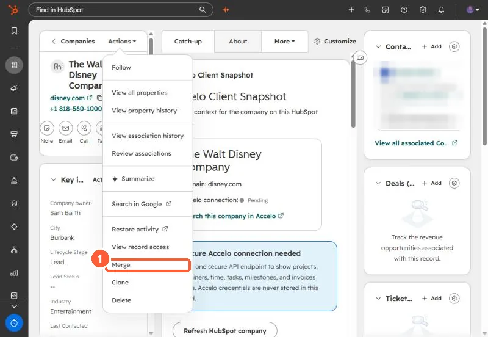

Short answer
Open a record, then Actions > Merge. The merged record combines activities, associations and most property values. The primary record's values win, except Record ID, Create date and certain contact and company properties, and an empty primary value takes the secondary's. Logged playbooks carry over, drafts do not. With Salesforce, only the primary contact keeps syncing. HubSpot says merged records cannot be reverted.
1. Where


2. Which values win
- The primary record's values, in general.
- Empty primary values are filled from the secondary.
- Exceptions include Record ID, Create date, and some contact and company properties. You can choose values where offered.
3. Before you merge
With Salesforce syncing, make the record that syncs the primary. Merges cannot be reverted, so check the pair first. For many duplicates at once, use Manage duplicates. See duplicates after an import and phone formats hiding duplicates.